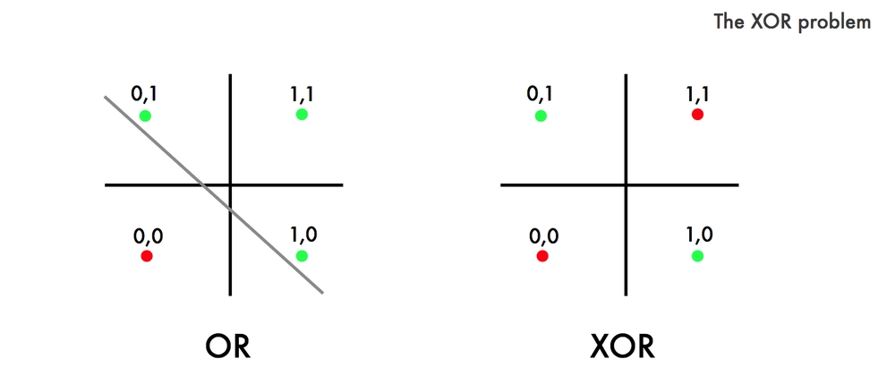
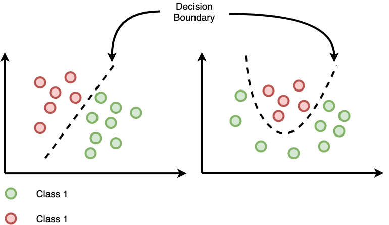
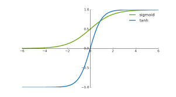
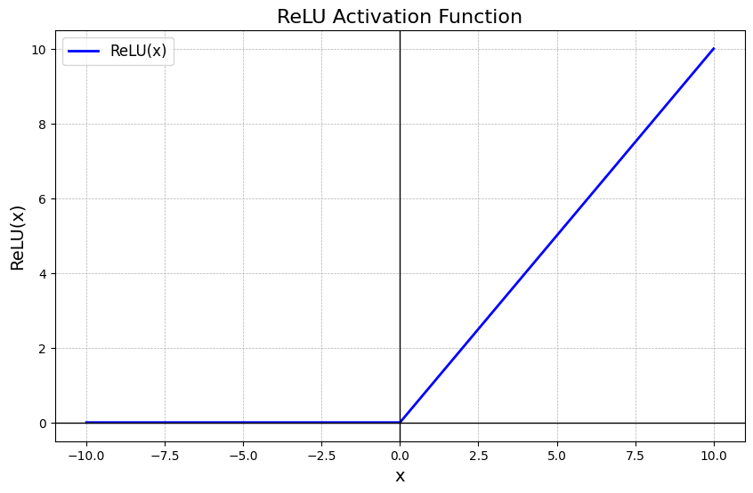
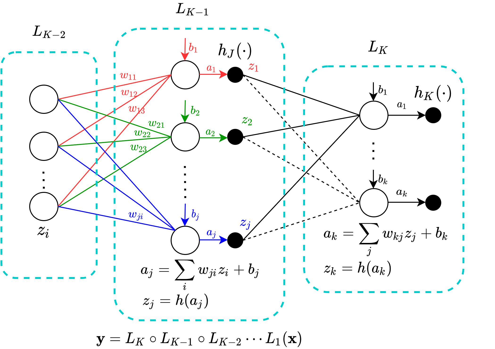

Feed-Forward Neural Networks in Finance
Perceptrons, MLPs, SGD and Financial Applications
Motivation
Why Neural Networks in Finance?
- Financial relationships are non-linear
- Classical linear models have limited expressiveness
- Neural networks can approximate any continuous function
Used in:
- Credit scoring
- Return prediction
- Volatility forecasting
- Fraud detection
Feed-Forward Neural Networks
What is a Feed-Forward Network?
- Information flows one direction only
- No cycles, no memory
Composed of:
- Input layer
- Hidden layers
- Output layer
\[\widehat{y} = F(\mathbf x;\boldsymbol \theta)\]
Feed-Forward NN Structure
The Perceptron
Single Neuron Model
\[z = w^\top x + b\] \[\widehat{y} = \phi(z)\]
Where:
- \(x\): features
- \(w\): weights
- \(b\): bias
- \(\phi\): activation function
Perceptron as a Classifier
- Binary classifier
- Linear decision boundary
- Cannot solve XOR
\[\widehat{y} = \mathbb{1}(\mathbf{w}^\top x + \mathbf{b} > 0)\]
Multi-Layer Perceptron (MLP)
Limitation of a Single Perceptron
- Can only learn linear decision boundaries
- Cannot solve XOR

Why Hidden Layers?
- Composition of linear + non-linear maps
- Enables non-linear decision boundaries
\[\mathbf{h}^{(1)} = \phi(\mathbf{W}^{(1)} \mathbf{x} + \mathbf{b}^{(1)})\] \[\widehat{y} = \phi(\mathbf{W}^{(2)} \mathbf{h}^{(1)} + \mathbf{b}^{(2)})\]
Universal Approximation Theorem
A feed-forward network with one hidden layer can approximate any continuous function on a compact domain.
Expressiveness grows with:
- Number of neurons
- Depth
- Choice of activation
Activation Functions
Why Activations Matter
Without activations
- Network collapses to a linear model
With activations
- Introduce non-linearity
- Control gradient flow
Logistic Regression vs Neural Networks
Logistic Regression
\[ P(y=1 \mid \mathbf{x}) = \sigma(\mathbf{w}^\top \mathbf{x} + b) \]
- Linear decision boundary
- Convex optimization
- Interpretable coefficients
- Strong statistical grounding
Typical finance uses
- Credit scoring
- Default probability
- Risk classification
Neural Networks (MLP)
\[ P(y=1 \mid \mathbf{x}) = \sigma\big(\mathbf{W}^{(2)} \phi(\mathbf{W}^{(1)}\mathbf{x} + \mathbf{b}^{(1)}) + \mathbf{b}^{(2)}\big) \]
- Non-linear decision boundary
- Non-convex optimization
- High expressive power
- Requires tuning & regularization
Typical finance uses
- Fraud detection
- Complex behavioral patterns
- High-dimensional signals
Decision Boundary Intuition
- Logistic regression ⇒ straight line / hyperplane
- Neural networks ⇒ curved, flexible boundaries

Curved NN boundary
Common Activation Functions
| Function | Formula | Typical Use |
|---|---|---|
| Sigmoid | \(\frac{1}{1+e^{-z}}\) | Probabilities |
| Tanh | \(\tanh(z)\) | Centered data |
| ReLU | \(\max(0,z)\) | Default hidden layers |
| Softmax | \(\frac{e^z}{\sum e^z}\) | Multiclass |


ReLU vs Sigmoid (Finance Insight)
Sigmoid:
- Vanishing gradients
- Saturation
ReLU:
- Sparse activation
- Faster convergence
- Industry standard
Loss Functions
Loss Functions: Why Do We Need Them?
A neural network produces predictions:
\[ \widehat{\mathbf y} = \mathbf f_\boldsymbol\theta(\mathbf x) \]
But how do we measure how wrong it is?
We define a loss function:
\[ \mathscr{L}(\mathbf y, \widehat{\mathbf y}) \]
Training objective:
\[ \min_{\boldsymbol \theta} \; \mathscr{L}(\mathbf y, \widehat{\mathbf y}) \]
The loss defines:
- The optimization problem
- The gradient signal
- The statistical interpretation
Regression Loss: Mean Squared Error (MSE)
Used for: - Regression - Continuous targets
Definition:
\[ \mathscr{L}_{MSE} = \frac{1}{n} \sum_{i=1}^n (\mathbf y_i - \widehat{\mathbf y}_i)^\top (\mathbf y_i - \widehat{\mathbf y}_i) \]
Properties:
- Penalizes large errors heavily
- Smooth and differentiable
- Corresponds to Gaussian noise assumption
MSE: Gradient Intuition
For a single example:
\[ \mathscr{L} = \frac{1}{2}(y - \widehat{y})^2 \]
Derivative:
\[ \frac{\partial \mathscr{L}}{\partial \widehat{y}} = \widehat{y} - y \]
Interpretation:
- If prediction too large → positive gradient
- If prediction too small → negative gradient
This becomes the error signal in backpropagation
Binary Classification: Binary Cross-Entropy
Used for:
- Spam detection
- Credit default
- Medical diagnosis
Output: probability
\[ \widehat{y} = \sigma(z) \]
Loss:
\[ \mathscr{L}_{BCE} = - \left[ y \log(\widehat{y}) + (1-y)\log(1-\widehat{y}) \right] \]
Why Not Use MSE for Classification?
Problem:
- Sigmoid saturates
- Gradients become very small
Binary cross-entropy:
- Strong gradients when wrong
- Better probabilistic interpretation
With sigmoid + BCE: \[ \frac{\partial \mathscr{L}}{\partial z} = \widehat{y} - y \]
Clean gradient → stable training
Multiclass Classification: Cross-Entropy
Used for:
- Digit recognition
- Image classification
- NLP tagging
Output: Softmax
\[ \widehat{y}_i = \frac{e^{z_i}}{\sum_j e^{z_j}} \]
Loss:
\[ \mathscr{L}_{CE} = - \sum_{i=1}^K y_i \log(\widehat{y}_i) \]
Where:
- \(y_i\) is one-hot encoded
Backpropagation
Training a Neural Network
Goal: \[ \min_{\boldsymbol \theta} \; \mathscr{L}(\mathbf y, \widehat{\mathbf y}) \]
Steps:
- Forward pass
- Compute loss
- Backpropagate gradients
- Update parameters
Backpropagation: Intuition
- Efficient application of the chain rule
- Propagates error backward
- Computes gradients for all weights

Backpropagation
Backpropagation: What Problem Are We Solving?
We want to compute efficiently:
\[ \frac{\partial \mathscr{L}}{\partial w^{(l)}_{jk}} \quad \text{for all layers } l \]
Naively:
- Many parameters
- Repeated computations
Key idea
- Reuse intermediate derivatives
- Apply the chain rule systematically
Backpropagation: Chain Rule View
Forward pass: \[ \mathbf x \rightarrow \mathbf z^{(1)} \rightarrow \mathbf h^{(1)} \rightarrow \mathbf z^{(2)} \rightarrow \widehat{\mathbf y} \]
Where: \[ \mathbf z^{(l)} = \mathbf W^{(l)} \mathbf h^{(l-1)} + \mathbf b^{(l)} \] \[ \mathbf h^{(l)} = \sigma(\mathbf z^{(l)}) =[\sigma(z_1^{(l)}), \ldots, \sigma(z_{n_l}^{(l)})]^\top \]
Backward pass: \[ \frac{\partial \mathscr{L}}{\partial \mathbf z^{(l)}} = \frac{\partial \mathscr{L}}{\partial \mathbf z^{(l+1)}} \frac{\partial \mathbf z^{(l+1)}}{\partial \mathbf z^{(l)}} \]
Note
Errors flow backwards, data flows forwards
Backpropagation: Error Terms
Define the error signal at layer \(l\):
\[ \boldsymbol \delta^{(l)} = \frac{\partial \mathscr{L}}{\partial \mathbf z^{(l)}} \]
Output layer: \[ \boldsymbol \delta^{(L + 1)} = \nabla_{\widehat{\mathbf y}} \mathscr{L} \odot \sigma'(\mathbf z^{(L + 1)}) \]
Hidden layers: \[\begin{align*} \boldsymbol \delta^{(l)} &= \frac{\partial \mathscr{L}}{\partial \mathbf z^{(l)}} \\ & = \frac{\partial \mathscr{L}}{\partial \mathbf z^{(l + 1)}} \frac{\partial \mathbf z^{(l + 1)}}{\partial \mathbf h^{(l)}} \frac{\partial \mathbf h^{(l)}}{\partial \mathbf z^{(l)}} \\ & = \boldsymbol \delta^{(l+1)} \left(\mathbf W^{(l+1)}\right)^\top \odot \sigma'(\mathbf z^{(l)}) \end{align*}\]
Gradients at Each Layer
\[ \frac{\partial \mathscr L}{\partial w^{(l)}_{jk}} = \frac{\partial \mathscr L}{\partial \mathbf z^{(l)}} \frac{\partial \mathbf z^{(l)}}{\partial w^{(l)}_{jk}} = \boldsymbol \delta^{(l)} \begin{bmatrix}0 \\ \vdots \\ \underbrace{h^{(l-1)}_k}_{k^{\text{th}}\text{ position}} \\ \vdots \\ 0\end{bmatrix} =\delta^{(l)}_j h^{(l-1)}_k \]
\[ \frac{\partial \mathscr L}{\partial \mathbf W^{(l)}} = \boldsymbol \delta^{(l)} \left(\mathbf h^{(l-1)}\right)^\top \]
Toy Example: One Hidden Neuron
Model:
- Input: \(x = 1\)
- Hidden: \(h = \sigma(w_1 x)\)
- Output: \(\widehat{y} = w_2 h\)
- Loss: \(\mathscr{L} = \frac{1}{2}(y - \widehat{y})^2\)
Forward: \[ h = \sigma(w_1) \]
\[ \widehat{y} = w_2 h \]
Backward:
\[ \frac{\partial \mathscr{L}}{\partial w_2} = (\widehat{y} - y) h \]
\[ \frac{\partial \mathscr{L}}{\partial w_1} = (\widehat{y} - y) w_2 \sigma'(w_1) \]
Note
Error at output propagates backward to earlier weights
Gradient Descent
Goal:
\[ \min_{\boldsymbol \theta} \; \mathscr{L}(\boldsymbol \theta) \]
Update rule:
\[ \boldsymbol \theta \leftarrow \boldsymbol \theta - \eta \nabla_{\boldsymbol \theta} \mathscr{L}(\boldsymbol \theta) \]
Where:
- \(\eta\) = learning rate
- \(\nabla_{\boldsymbol \theta} \mathscr{L}\) = gradient
- \(\boldsymbol \theta\) = all weights and biases
Interpretation:
Move parameters in the direction of steepest decrease.
Stochastic & Mini-Batch Gradient Descent
Full gradient (expensive):
\[ \nabla_{\boldsymbol \theta} \mathscr{L} = \frac{1}{N} \sum_{i=1}^{N} \nabla_{\boldsymbol \theta} \mathscr{L}_i \]
Mini-batch gradient:
\[ \nabla_{\boldsymbol \theta} \mathscr{L}_B = \frac{1}{|B|} \sum_{i \in B} \nabla_{\boldsymbol \theta} \mathscr{L}_i \]
Weight update:
\[ \boldsymbol \theta \leftarrow \boldsymbol \theta - \eta \nabla_{\boldsymbol \theta} \mathscr{L}_B \]
Why batching works:
The mini-batch gradient is an unbiased estimator of the true gradient: \[ \mathbb{E}[\nabla_{\boldsymbol \theta} \mathscr{L}_B] = \nabla_{\boldsymbol \theta} \mathscr{L} \]
Much cheaper computationally
Adds useful noise → helps escape shallow minima
Batches and Epochs
Definitions:
- Batch size = number of samples used per update
- Iteration = one parameter update
- Epoch = one full pass through the dataset
If:
- Dataset size = \(N\)
- Batch size = \(B\)
Then:
- Iterations per epoch = \(\frac{N}{B}\)
Example
\(N\) = 10000
Batch size = 100 → 100 updates per epoch
Why multiple epochs?
- One pass is rarely enough
- We refine weights gradually
- Convergence requires repeated updates

Momentum: Accelerating Gradient Descent
Problem with vanilla SGD:
- Oscillates in narrow valleys
- Slow convergence
- Sensitive to noisy gradients
Idea
Accumulate a velocity vector in the direction of consistent descent.
Velocity update:
\[ \mathbf v_t = \beta \mathbf v_{t-1} + \nabla_\theta \mathscr{L}_B \]
Weight update:
\[ \boldsymbol \theta_t = \boldsymbol \theta_{t-1} - \eta \mathbf v_t \]
Where:
- \(\beta \in [0,1)\) = momentum coefficient (e.g. 0.9)
- \(\mathbf v_t\) = exponentially weighted moving average of gradients
Intuition:
- Smooths noisy updates
- Speeds up motion along shallow directions
- Reduces zig-zag behaviour
RMSProp: Adaptive Learning Rates
Problem with SGD + Momentum:
- Same learning rate for all parameters
- Some directions require smaller steps
- Exploding updates in steep dimensions
Idea:
Scale the learning rate using a running average of squared gradients.
Compute running average:
\[ \mathbf s_t = \rho \mathbf s_{t-1} + (1-\rho)(\nabla_{\boldsymbol \theta} \mathscr{L}_B)^2 \]
Update rule:
\[ \boldsymbol \theta_t = \boldsymbol \theta_{t-1} - \frac{\eta}{\sqrt{\mathbf s_t} + \epsilon} \nabla_{\boldsymbol \theta} \mathscr{L}_B \]
Where:
- \(\rho \approx 0.9\)
- \(\epsilon \approx 10^{-8}\)
Intuition:
- Large gradients → smaller effective step
- Small gradients → larger effective step
- Each parameter gets its own adaptive learning rate
Adam: Momentum + RMSProp
Adam = Adaptive Moment Estimation
Combines:
- Momentum (1st moment)
- RMSProp (2nd moment)
Step 1: First moment (mean of gradients)
\[ \mathbf m_t = \beta_1 \mathbf m_{t-1} + (1-\boldsymbol\beta_1) \nabla_\theta \mathscr{L}_B \]
Step 2: Second moment (mean of squared gradients)
\[ \mathbf v_t = \beta_2 \mathbf v_{t-1} + (1-\beta_2) (\nabla_\theta \mathscr{L}_B)^2 \]
Step 3: Bias correction
\[ \widehat{\mathbf m}_t = \frac{\mathbf m_t}{1-\beta_1^t} \quad \widehat{\mathbf v}_t = \frac{\mathbf v_t}{1-\beta_2^t} \]
Step 4: Parameter update
\[ \boldsymbol \theta_t = \boldsymbol \theta_{t-1} - \frac{\eta}{\sqrt{\widehat{\mathbf v}_t} + \epsilon} \widehat{\mathbf m}_t \]
Typical defaults:
- \(\beta_1 = 0.9\)
- \(\beta_2 = 0.999\)
- \(\epsilon = 10^{-8}\)
Intuition
- Momentum → smooth direction
- RMSProp → adaptive step size
- Bias correction → stabilizes early training
Adam works well “out of the box” in most deep learning problems.
Financial Applications
Example 1: Stock Return Prediction
Features:
- Lagged returns
- Technical indicators
- Volatility measures
Target:
\[y_t = r_{t+1}\]
Example 2: Credit Scoring
- Binary classification
- Non-linear interactions between:
- Income
- Debt
- Credit history
Output:
\[P(\text{default} \mid x)\]
Example 3: Volatility Forecasting
- Non-linear alternative to GARCH
- Inputs:
- Returns
- Squared returns
- Macro variables